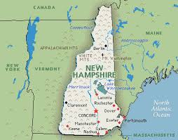
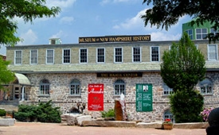
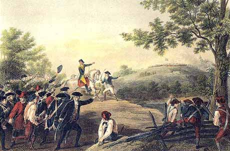

New England
Massachusetts
Salem Witches
 The Salem witch trials were a series of hearings and prosecutions of people accused of witchcraft in colonial Massachusetts between February 1692 and May 1693. The trials resulted in the executions of twenty people, most of them women, and all but one by hanging. Twelve other women had previously been executed in Massachusetts and Connecticut during the 17th century. Despite being generally known as the Salem witch trials, the preliminary hearings in 1692 were conducted in several towns: Salem Village (now Danvers), Salem Town, Ipswich and Andover. The most infamous trials were conducted by the Court of Oyer and Terminer in 1692 in Salem Town.
The Salem witch trials were a series of hearings and prosecutions of people accused of witchcraft in colonial Massachusetts between February 1692 and May 1693. The trials resulted in the executions of twenty people, most of them women, and all but one by hanging. Twelve other women had previously been executed in Massachusetts and Connecticut during the 17th century. Despite being generally known as the Salem witch trials, the preliminary hearings in 1692 were conducted in several towns: Salem Village (now Danvers), Salem Town, Ipswich and Andover. The most infamous trials were conducted by the Court of Oyer and Terminer in 1692 in Salem Town.
New Hampshire
Exeter, Concord, Portsmouth & Charlestown

 The American Independence Museum is a historic house museum located in Exeter, New Hampshire. Its 1-acre (0.40 ha) campus includes two buildings: the Ladd-Gilman House, a registered National Historic Landmark built in 1721 by Nathaniel Ladd, and the Folsom Tavern, built in 1775 by Colonel Samuel Folsom. Charlestown's early history was anything but peaceful, however. The area now comprising the town was chartered by the Colony of Massachusetts Bay in 1735 as Plantation No. 4, the northernmost township along the Connecticut River. Strawbery Banke is an outdoor history museum located in the South End historic district of Portsmouth, New Hampshire. It is the oldest neighborhood in New Hampshire to be settled by Europeans, and the earliest neighborhood remaining in the present-day city of Portsmouth. Concord is the capital city of the U.S. state of New Hampshire and the county seat of Merrimack County. As of the 2010 census, its population was 42,695.
Vermont
Bennington
 The Battle of Bennington was a battle of the American Revolutionary War, part of the Saratoga campaign, that took place on August 16, 1777, in Walloomsac, New York, about 10 miles (16 km) from its namesake Bennington, Vermont. A rebel force of 2,000 men, primarily composed of New Hampshire and Massachusetts militiamen, led by General John Stark, and reinforced by men led by Colonel Seth Warner and members of the Green Mountain Boys, decisively defeated a detachment of General John Burgoyne's army led by Lieutenant Colonel Friedrich Baum, and supported by additional men under Lieutenant Colonel Heinrich von Breymann.
Maine
Portland
Portland is the largest city in the U.S. state of Maine and the county seat of Cumberland County.[5] In 2013, the city proper had a population of 66,318,[4] growing 3 percent since the census of 2000, while the urban area had a population of 203,914. The Greater Portland metropolitan area is home to over half a million people, more than one-third of Maine's total population. Tourists visit Portland's historic Old Port district along Portland Harbor, at the mouth of the Fore River and part of Casco Bay, and the Arts District, which runs along Congress Street in the center of the city. Portland Head Light is located in nearby Cape Elizabeth and marks the entrance to Portland Harbor.